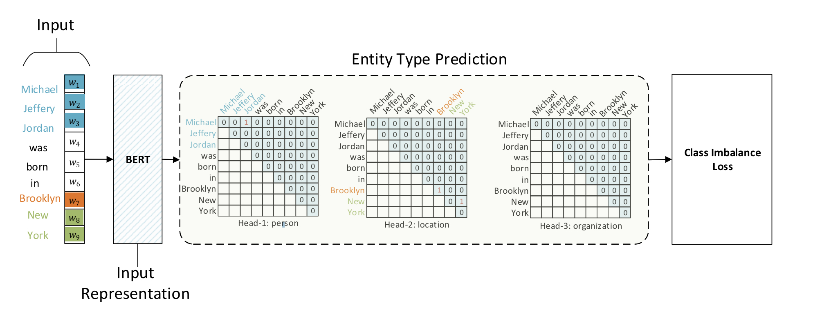

Background
-
单个字符的子序列：对于长度为 \(n\) 的序列，有 \(n\) 个可能的单个字符的子序列。
-
长度为\(k\)的子序列：对于任意 \(1 < k \leq n\)，序列中可以有 \(n - k + 1\) 个长度为 \(k\) 的子序列，因为可以从序列的起始位置开始取长度为 \(k\) 的子序列，也可以从序列的第二个字符开始取，依此类推，直到从序列的第 \(n-k+1\) 个字符开始。
-
所有可能的子序列总数：要得到序列中所有可能的非空子序列的总数，我们需要对所有可能的子序列长度求和，即从长度为 1 加到长度为 \(n\) ：
Problem Description
从 \(\frac{n(n + 1)}{2}\) 候选实体中选取真正实体。如果有 \(m\) 种实体类型，即转换为 \(m\) 个 \(\frac{n(n + 1)}{2}\) 选 \(k\) 的多标签分类问题。
Mathematical Form
Multi-Head Attention without Value Operation
设长度为 \(n\) 的输入 \(t\) 经过编码后得到向量序列 \([h_1, h_2, \ldots, h_n]\)，即Token Representation，通过变换
我们可以得到序列向量序列 \([q_{1, \alpha}, q_{2, \alpha}, \ldots, q_{n, \alpha}]\) 和 \([k_{1, \alpha}, k_{2, \alpha}, \ldots, k_{n, \alpha}]\)，它们是识别第 \(\alpha\) 种类型实体所用的向量序列。定义Span Prediction
是类型为 \(\alpha\) 的实体的打分（logits），这里的 \(t[i:j]\) 指的是序列 \(t\) 的第 \(i\) 个到第 \(j\) 个元素组成的连续子串。
GlobalPointer 就是简化版 Multi-Head Attention，有多少种实体就对应多少个头，相比 Multi-Head Attention 去掉了 \(Value\) 相关的运算。
Global Pointer
Multi-Head Attention without Value Operation

Loss
GP4Paddle
# !/usr/bin/env python3
# -*- coding: UTF-8 -*-
#
################################################################################
#
# Copyright (c) 2022 All Rights Reserved.
#
################################################################################
"""Global Pointer.
"""
import math
import numpy as np
import paddle
import paddle.nn as nn
from paddlenlp.transformers import ErniePretrainedModel
class RotaryPositionEmbedding(nn.Layer):
"""Sinusoidal position embedding.
"""
def __init__(self, dim, max_seq_len=512):
super().__init__()
inv_freq = 1.0 / (10000 ** (paddle.arange(0, dim, 2, dtype='float32') / dim))
t = paddle.arange(max_seq_len, dtype=inv_freq.dtype)
freqs = paddle.matmul(t.unsqueeze(1), inv_freq.unsqueeze(0))
self.register_buffer("sin", freqs.sin(), persistable=False)
self.register_buffer("cos", freqs.cos(), persistable=False)
def forward(self, x, offset=0):
"""The RPE forward method, overrides the `__call__()` special method.
"""
seqlen = paddle.shape(x)[-2]
sin, cos = (
self.sin[offset:offset + seqlen, :],
self.cos[offset:offset + seqlen, :],
)
x1, x2 = x[..., 0::2], x[..., 1::2]
return paddle.stack([x1 * cos - x2 * sin, x1 * sin + x2 * cos], axis=-1).flatten(-2, -1)
class GlobalPointer(nn.Layer):
"""Global Pointer Header.
"""
def __init__(self,
hidden_size,
heads,
head_size=64,
RoPE=True,
tril_mask=True,
max_length=512):
super().__init__()
self.heads = heads
self.head_size = head_size
self.RoPE = RoPE
self.tril_mask = tril_mask
self.dense1 = nn.Linear(hidden_size, head_size * 2)
self.dense2 = nn.Linear(head_size * 2, heads * 2)
if RoPE:
self.rotary = RotaryPositionEmbedding(head_size, max_length)
def forward(self, inputs, attention_mask=None):
"""
The GPModel forward method, overrides the `__call__()` special method.
Args:
inputs (Tensor):
Indices of input sequence tokens in the vocabulary. They are
numerical representations of tokens that build the input sequence
attention_mask (Tensor, optional):
Mask used in multi-head attention to avoid performing attention to some unwanted positions,
usually the paddings or the subsequent positions.
"""
inputs = self.dense1(inputs)
qw, kw = inputs[..., ::2], inputs[..., 1::2]
# RoPE编码
if self.RoPE:
qw, kw = self.rotary(qw), self.rotary(kw)
# 计算内积
logits = paddle.einsum("bmd,bnd->bmn", qw, kw) / self.head_size ** 0.5
bias = paddle.transpose(self.dense2(inputs), [0, 2, 1]) / 2
logits = logits[:, None] + bias[:, ::2, None] + bias[:, 1::2, :, None]
# 排除padding
attn_mask = (
1 -
attention_mask[:, None, None, :] * attention_mask[:, None, :, None])
logits = logits - attn_mask * 1e12
# 排除下三角
if self.tril_mask:
mask = paddle.tril(paddle.ones_like(logits), diagonal=-1)
logits = logits - mask * 1e12
return logits
class ErnieForGlobalPointer(ErniePretrainedModel):
"""
ERNIE Model with a global pointer header on top of the hidden-states output layer,
designed for NER tasks.
Args:
encoder (`ErnieModel`):
An instance of `ErnieModel`.
entity_size_num (int):
The number of entity type.
max_length (int):
Max length.
head_size (int):
Head size.
"""
def __init__(self, encoder, entity_size_num, max_length, head_size=64):
super(ErnieForGlobalPointer, self).__init__()
self.encoder = encoder
hidden_size = encoder.config["hidden_size"]
self.entity_output = GlobalPointer(hidden_size,
entity_size_num,
head_size=head_size,
max_length=max_length)
def forward(self, input_ids, attention_mask):
"""
The GPModel forward method, overrides the `__call__()` special method.
Args:
input_ids (Tensor):
Indices of input sequence tokens in the vocabulary. They are
numerical representations of tokens that build the input sequence
attention_mask (Tensor, optional):
Mask used in multi-head attention to avoid performing attention to some unwanted positions,
usually the paddings or the subsequent positions.
"""
# input_ids, attention_mask, token_type_ids: (batch_size, seq_len)
context_outputs = self.encoder(input_ids, attention_mask=attention_mask)
# last_hidden_state: (batch_size, seq_len, hidden_size)
last_hidden_state = context_outputs[0]
entity_output = self.entity_output(last_hidden_state, attention_mask)
return entity_output
Refs.